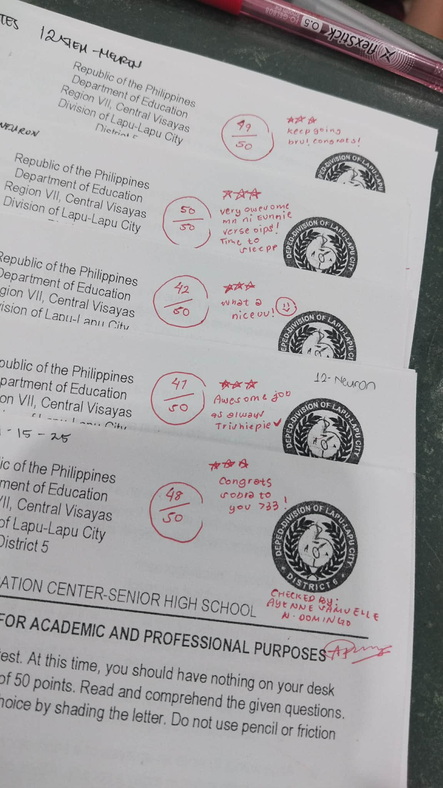
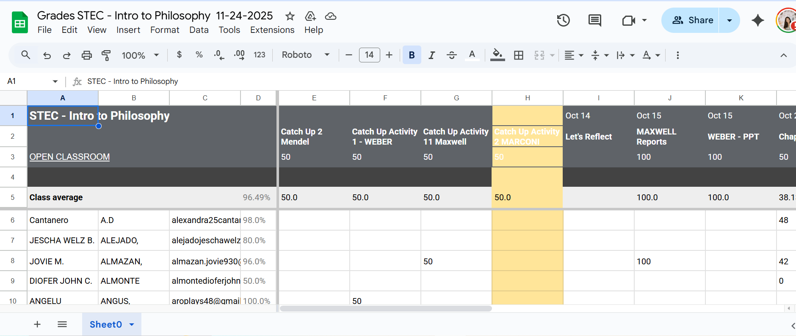

My Immersion Tasks
Checking & Frequency of Error
Checked answer sheets, verified answer keys, and calculated student error frequency to improve lessons.
Grading & Masterlists
Graded assignments, updated records, and organized masterlists using Excel and Google Sheets.
Collecting & Sorting Outputs

Collected, sorted, and organized daily class outputs to maintain teacher workflow and accountability.
Classroom Assistance

Assisted teachers with in-class tasks, monitored activities, and supported general classroom operations.
Collaboration with Others

Worked with fellow interns to coordinate tasks, share effective strategies, and improve overall workflow efficiency.
Scholarships & Applications

Researched and submitted scholarship applications (including DOST) to enhance personal and academic growth.
Graphic Design & Layout

Designed posters, presentations, and layouts using tools like Canva and PowerPoint for school events and needs.
A Student Intern from STEC
Dedicated, Organized, and Eager to Learn
Hi! My name is Ayenne Samuelle N. Domingo, from Grade 12- HUMMS LAW. I aspire to be first a professional teacher in SPED OR ECE then become an attorney someday. I am a senior high school style> .task-img { width: auto; /* maintain natural width */ max-width: 250px; /* set a max width */ height: auto; /* maintain aspect ratio */ display: block; /* center with margin auto */ margin: 0 auto 5px auto; /* center horizontally, small bottom space */ border-radius: 5px; }
Contests I Won During Immersion
Cebu Young Diplomat MUN

Description…
Palm Grass Extemporaneous Speech

Description…
John Locke Institute (Oxford) Admission

I was accepted into the JLI Oxford Summer School in Singapore!
Things I Did for Fun
Watched Anime

Made Fuzzy Wire Flowers

Art